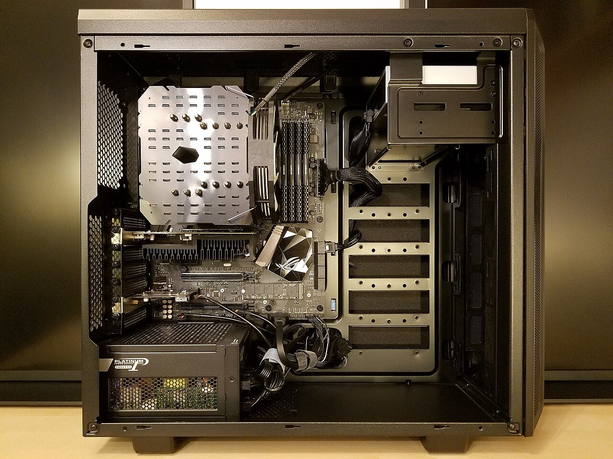
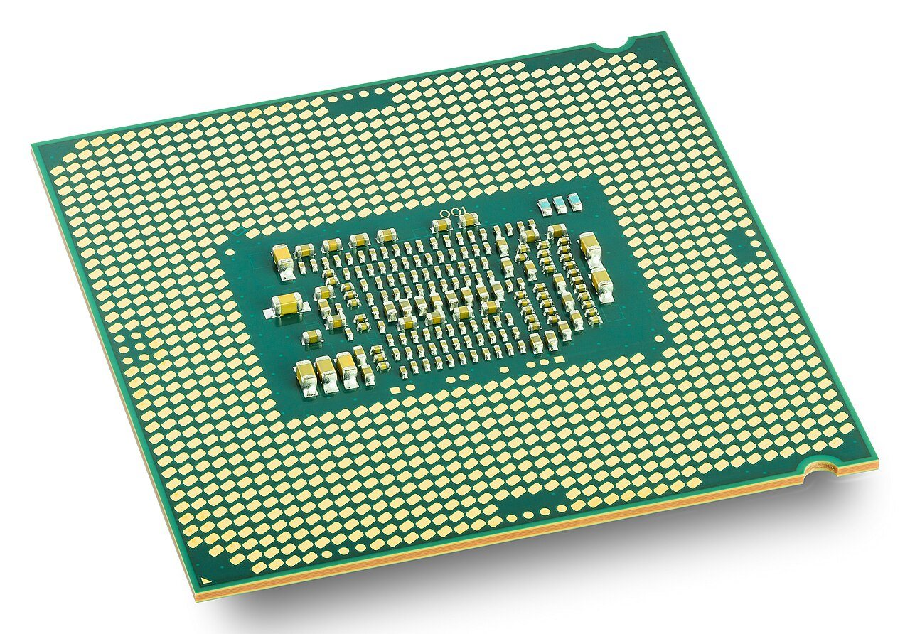
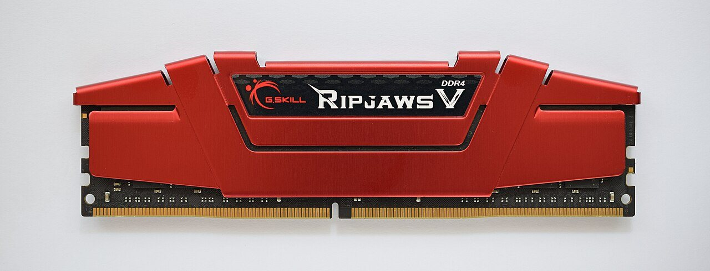
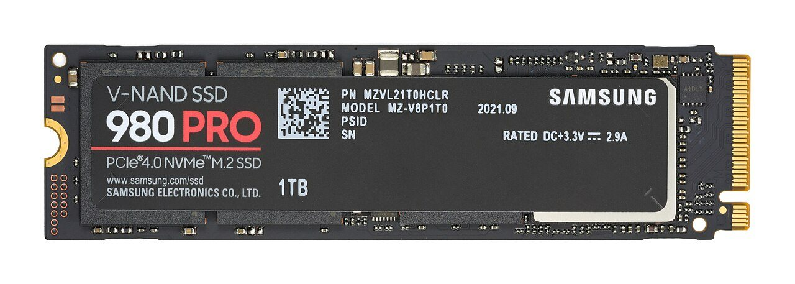
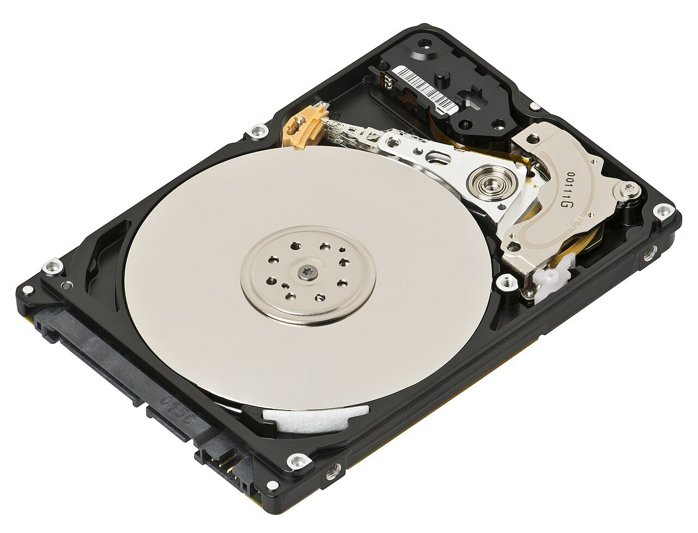
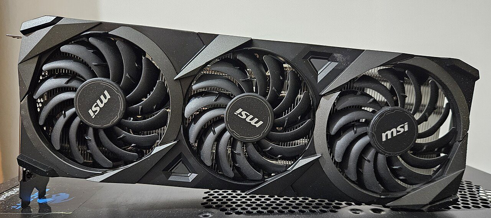
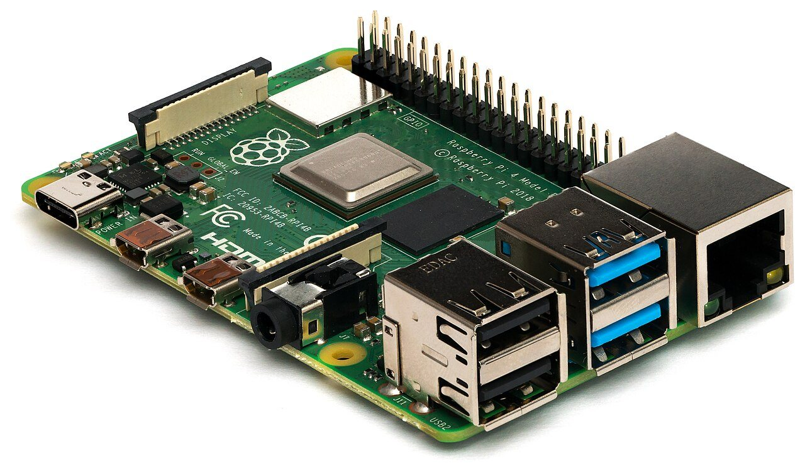

컴퓨터의 몸
CPU, 메모리, 저장장치가 하는 일
컴퓨터가 느려지면 답답합니다. 그런데 왜 느려졌을까요? 컴퓨터 안에는 맡은 일이 서로 다른 부품들이 있습니다. 계산하는 부품, 일하는 동안 물건을 펼쳐 두는 부품, 오래 보관하는 부품입니다. 이 셋이 무슨 일을 하는지 알면 컴퓨터가 왜 느린지도 짐작할 수 있습니다.
- CPU, 메모리, 저장장치가 각각 무슨 일을 하는지 말할 수 있습니다.
- 저장 공간이 남아도 컴퓨터가 느려질 수 있는 이유를 설명할 수 있습니다.
- 컴퓨터 사양표에 적힌 숫자가 무슨 뜻인지 읽을 수 있습니다.
- GPU가 무엇을 잘하는 부품인지 말할 수 있습니다.
1.1컴퓨터는 하나의 주방입니다#
세 부품을 한꺼번에 떠올리기 좋은 곳이 있습니다. 학교 앞 분식집의 주방입니다.
주방에는 요리사가 있습니다. 요리사는 레시피를 한 줄씩 읽으며 손을 움직입니다. 요리사 앞에는 조리대가 있습니다. 지금 쓰는 재료와 그릇을 여기에 펼쳐 놓습니다. 주방 뒤쪽에는 창고가 있습니다. 당장 쓰지 않는 재료를 여기에 오래 보관합니다.
컴퓨터 안에도 이 셋과 꼭 닮은 부품이 있습니다.
그림 오른쪽의 세 부품을 위에서부터 하나씩 만나 봅시다.
요리사에게 레시피가 있다면 컴퓨터에는 프로그램이 있습니다. 게임도, 메신저도 프로그램입니다. 프로그램은 컴퓨터가 할 일을 차례대로 적어 둔 글입니다. 그 한 줄 한 줄을 명령이라고 합니다.
이 명령을 하나씩 읽고 계산하는 부품이 CPU(중앙처리장치, Central Processing Unit)입니다. 주방의 요리사입니다.
요리에는 재료도 있어야 합니다. 컴퓨터의 재료는 글, 사진, 소리, 숫자입니다. 이런 것을 통틀어 데이터(data)라고 합니다.
프로그램을 켜서 돌리는 것을 "실행한다"고 말합니다. 실행하는 동안 프로그램과 데이터는 어딘가에 펼쳐져 있어야 합니다. 그 자리가 메모리입니다. 주방의 조리대입니다.
메모리는 RAM(Random Access Memory)이라고도 부릅니다. "램"이라고 읽습니다.
찍어 둔 사진과 깔아 둔 게임은 전원을 꺼도 남아 있어야 합니다. 이런 것을 오래 보관하는 부품이 저장장치입니다. 주방의 창고입니다. 그림에 적힌 SSD는 요즘 많이 쓰는 저장장치의 이름입니다.
주방 이야기 하나만 기억해도 많은 것이 풀립니다. 창고가 아무리 커도 조리대가 좁으면 한 번에 만들 수 있는 음식 수는 늘지 않습니다. 컴퓨터도 같습니다. 저장장치를 큰 것으로 바꿔도, 한꺼번에 켜 둘 수 있는 프로그램 수는 늘지 않습니다. 그것은 메모리가 정하는 일이기 때문입니다.

노트북과 스마트폰에도 같은 부품이 들어 있습니다. 다만 얇게 만들려고 여러 부품을 칩 하나에 모아 두었습니다. 칩은 손톱만 한 납작한 전자 부품입니다.
1.2CPU: 명령을 하나씩 해내는 요리사#
요리사는 레시피를 한 줄 읽고, 그대로 하고, 다음 줄로 넘어갑니다. CPU가 일하는 모습도 이만큼 단순합니다. 아래 네 걸음을 끝없이 되풀이합니다.
3 + 4를 계산하는 명령으로 따라가 봅시다.
- 가져오기. 메모리에서 다음 명령을 가져옵니다.
- 해석하기. 무슨 일인지 알아냅니다. "3과 4를 더해라"입니다.
- 실행하기. 3과 4를 더해 7을 얻습니다.
- 기록하기. 7을 정해진 자리에 적어 둡니다.
그러고는 곧장 다음 명령으로 넘어갑니다.
CPU가 할 줄 아는 명령은 아주 작은 것뿐입니다. "더해라", "두 값을 비교해라", "저기로 옮겨라", "몇 번째 명령으로 건너뛰어라" 정도입니다. 동영상도, 게임도, AI도 이런 작은 명령을 수십억 개 이어 붙여 만든 것입니다. 대신 CPU는 이 일을 상상하기 어려울 만큼 빠르게 합니다.
사양표의 두 낱말: GHz와 코어
컴퓨터 광고에는 "CPU 8코어 3.2GHz" 같은 글이 적혀 있습니다. 이렇게 부품의 성능을 숫자로 적어 둔 표를 사양표라고 합니다. 여기 나온 두 낱말을 풀어 봅시다.
먼저 GHz입니다. CPU는 박자에 맞춰 일합니다. 박자가 빠를수록 일이 빨리 끝납니다. CPU가 1초에 치는 박자 수를 클럭 속도라고 합니다. 단위는 GHz이고 "기가헤르츠"라고 읽습니다. 1GHz는 1초에 10억 번이니, 3GHz는 약 30억 번입니다.
다음은 코어(core)입니다. CPU 안에 들어 있는 요리사 한 명을 코어라고 합니다. 8코어 CPU에는 따로따로 일하는 요리사가 8명 있습니다.
그러면 요리사가 8명이면 8배 빠를까요? 늘 그렇지는 않습니다. 김밥 8줄은 한 줄씩 나눠서 말 수 있습니다. 하지만 김밥 한 줄은 한 사람이 끝까지 말아야 합니다. 그동안 나머지 7명은 구경만 합니다. 프로그램도 일을 나눌 수 있게 만들어져 있어야 코어 여러 개가 함께 일합니다.
코어가 8개인데 하나만 쉬지 않고 일하고 나머지 7개는 논다고 합시다. 이때 컴퓨터는 CPU를 약 12.5%만 쓰고 있다고 알려 줍니다. 100 ÷ 8 = 12.5이기 때문입니다. 이 숫자를 CPU 사용률이라고 합니다.
사용률이 이렇게 낮은데도 느리다면 코어마다 따로 나오는 사용률을 봅니다. 하나만 바쁠 수 있습니다. 일을 여러 코어에 나누는 방법은 11장에서 다룹니다.

한 걸음 더CPU마다 알아듣는 말이 다릅니다 (x86-64와 ARM64)
CPU가 알아듣는 명령의 목록을 명령어 집합이라고 합니다. 요리사가 읽을 줄 아는 말인 셈입니다. 윈도우 컴퓨터는 대부분 x86-64라는 명령어 집합을 씁니다. 스마트폰과 요즘 나오는 맥은 ARM64를 씁니다.
한국어로 쓴 레시피를 프랑스 요리사에게 건네면 읽지 못합니다. 마찬가지로 x86-64에 맞춰 만든 프로그램은 ARM64 CPU에서 그대로 돌아가지 않습니다. 맥용 프로그램을 내려받을 때 "Intel용"과 "Apple Silicon용" 가운데 고르는 까닭입니다. 앞의 것이 x86-64용, 뒤의 것이 ARM64용입니다. 이 이야기는 4장에서 이어집니다.
1.3메모리(RAM): 지금 쓰는 것을 올려 두는 조리대#
요리사는 창고에 있는 재료로 바로 요리하지 못합니다. 먼저 조리대로 꺼내 와야 합니다. CPU도 같습니다. 저장장치에 있는 프로그램과 데이터는 메모리로 올라온 뒤에야 쓸 수 있습니다.
메모리에는 두 가지 성질이 있습니다.
- 빠릅니다. 요리사 손이 바로 닿는 곳이기 때문입니다. 저장장치에서 꺼낼 때보다 수백 배에서 수천 배 빠릅니다.
- 전원이 꺼지면 내용이 사라집니다. 가게 문을 닫을 때 조리대를 싹 치우는 것과 같습니다.
숙제를 한참 쓰다가 저장하지 않았는데 컴퓨터가 꺼진 적이 있나요? 다시 켜 보면 쓴 글이 없습니다. 화면에 보이던 글은 메모리(조리대) 위에만 있었습니다. 저장장치(창고)에는 아직 들어가지 않았던 것입니다.

조리대가 좁으면 어떻게 될까요? 요리사는 재료를 창고에 도로 갖다 놓고, 필요할 때 다시 꺼내 와야 합니다. 창고를 오가느라 요리가 늦어집니다.
컴퓨터도 같습니다. 메모리가 모자라면 당장 쓰지 않는 내용을 저장장치로 내보냅니다. 그러다 필요해지면 다시 불러옵니다. 저장장치는 메모리보다 훨씬 느립니다. 그래서 이때부터 모든 것이 눈에 띄게 느려집니다.
인터넷 창 위쪽에 줄줄이 달린 탭을 수십 개 열어 두면 컴퓨터가 버벅거립니다. 대개 메모리가 모자라서 생기는 일입니다. 이때는 저장 공간이 많이 남아 있어도 소용없습니다. 모자란 것은 창고가 아니라 조리대이기 때문입니다.
메모리의 크기는 "얼마나 많이 보관하느냐"가 아니라 "한 번에 얼마나 많이 펼쳐 놓고 일할 수 있느냐"를 정합니다.
1.4저장장치: 전원을 꺼도 남는 창고#
어제 찍은 사진은 오늘 휴대전화를 켜도 그대로 있습니다. 깔아 둔 게임도 사라지지 않습니다. 저장장치가 보관하고 있기 때문입니다.
저장장치는 사진, 글, 프로그램을 하나하나 따로 묶어서 보관합니다. 이 묶음 하나를 파일이라고 합니다. 사진 한 장이 파일 하나입니다.
저장장치는 메모리보다 훨씬 크고, 전원을 꺼도 내용이 남습니다. 대신 꺼내 오는 데 시간이 더 걸립니다. 저장장치에는 두 가지가 있습니다.


메모리와 저장장치의 크기는 바이트라는 단위로 잽니다. 1KB(킬로바이트)는 영어 글자 천 개쯤입니다. 1MB(메가바이트)는 그 천 배입니다. 1GB(기가바이트)는 다시 그 천 배, 1TB(테라바이트)는 또 그 천 배입니다. 사진 한 장이 몇 MB, 영화 한 편이 몇 GB쯤 됩니다. 바이트가 무엇인지는 2장에서 다룹니다.
이제 바탕화면에서 게임 아이콘을 빠르게 두 번 눌러 봅시다. 컴퓨터 안에서는 무슨 일이 벌어질까요?
- 불러오기. 저장장치에 파일로 있던 프로그램을 메모리로 읽어 옵니다. 영어로는 로드(load)라고 합니다. 큰 게임을 켤 때 나오는 로딩 화면이 바로 이 시간입니다.
- 실행. CPU가 메모리에서 명령을 하나씩 꺼내어 처리합니다. 결과는 다시 메모리에 적습니다.
- 저장. 게임을 얼마나 깼는지, 글을 어디까지 썼는지는 저장하기 전까지 메모리에만 있습니다. 저장 버튼을 눌러야 저장장치에 파일로 적힙니다.
저장장치에 놓인 프로그램 파일과, 메모리에 올라와 실행 중인 프로그램은 다른 것입니다. 창고에 꽂힌 레시피 책과 조리대 위의 요리가 다른 것과 같습니다. 실행 중인 프로그램은 프로세스라고 부릅니다. 3장의 주인공입니다.
1.5왜 따로 둘까: 속도의 사다리#
조리대를 창고만큼 넓게 만들면 재료를 가지러 갈 일이 없습니다. 그런데 왜 그렇게 하지 않을까요?
까닭은 값입니다. 빠른 부품은 비싸서 조금만 넣을 수 있습니다. 싼 부품은 많이 넣을 수 있지만 느립니다. 그래서 컴퓨터는 둘을 섞어 씁니다. 작고 빠른 것부터 크고 느린 것까지 사다리처럼 차례로 갖춰 둡니다.
얼마나 차이 날까요? CPU가 바로 곁에서 값 하나를 꺼내는 데는 약 1나노초(ns)가 걸립니다. 1초를 10억으로 나눈 시간입니다. 너무 짧아서 감이 오지 않습니다. 그래서 이 1나노초를 1초로 늘려서 비교해 보겠습니다.
표를 위에서부터 읽어 봅시다. 둘째 칸은 진짜 걸리는 시간이고, 셋째 칸은 그것을 같은 비율로 늘린 시간입니다. 맨 윗줄의 캐시는 조금 뒤에 설명합니다.
- 메모리는 약 100나노초입니다. 1나노초를 1초로 쳤으니 100초, 곧 약 2분입니다.
- SSD는 약 0.1밀리초(ms)입니다. 1밀리초는 100만 나노초이니 0.1밀리초는 10만 나노초입니다. 늘리면 10만 초, 곧 약 28시간입니다. 하루쯤입니다.
- 하드디스크는 같은 셈으로 약 4개월입니다.
- 바다 건너 서버는 약 5년입니다. 서버는 인터넷 건너편에서 부탁을 받아 처리해 주는 컴퓨터입니다. 다른 나라의 사이트를 열 때 이만큼 멀리 다녀옵니다.
맨 오른쪽 칸은 담을 수 있는 크기입니다. 아래로 갈수록 큽니다.
CPU가 보기에 메모리는 "2분 걸리는 옆방"입니다. SSD는 "하루 걸리는 옆 도시"입니다. 바다 건너 서버는 "5년 걸리는 여행"입니다.
그래서 프로그램이 느릴 때는 "지금 어디까지 다녀오고 있는가"를 먼저 묻습니다. 게임의 로딩 화면이 긴 것은 저장장치까지 다녀오기 때문입니다. 계산을 조금 줄이는 것보다 먼 곳에 다녀오는 횟수를 줄이는 쪽이 훨씬 큰 차이를 만듭니다.
캐시: 자주 쓰는 것은 손 닿는 곳에
요리사는 소금과 후추를 창고에 두지 않습니다. 손 옆 선반에 둡니다. 자주 쓰기 때문입니다.
CPU 안에도 이런 선반이 있습니다. 아주 작고 아주 빠른 보관함입니다. 이것을 캐시(cache)라고 합니다. 사다리의 맨 윗줄입니다. CPU는 방금 쓴 것과 그 옆에 있던 것을 캐시에 미리 가져다 놓습니다. 그러면 많은 일을 "1초 거리"에서 끝낼 수 있습니다.
"자주 쓰는 것을 가까이 둔다"는 생각은 CPU에만 있지 않습니다. 인터넷 창도 한 번 본 그림을 내 컴퓨터에 남겨 두었다가 다음에 빨리 보여 줍니다. 이것도 캐시라고 부릅니다.
한 걸음 더데이터를 나란히 놓으면 왜 빨라질까 (지역성)
요리사는 창고에 간 김에 옆 칸 재료까지 한 바구니에 담아 옵니다. CPU도 값 하나가 필요할 때 그 값만 가져오지 않습니다. 옆에 붙어 있는 값들까지 한 묶음(보통 64바이트)으로 캐시에 가져옵니다.
그래서 함께 쓸 데이터는 메모리에 나란히 놓여 있을 때 빠릅니다. 한 번 가져온 묶음으로 여러 개를 잇달아 처리할 수 있기 때문입니다. 여기저기 흩어져 있으면 값 하나를 볼 때마다 "2분 걸리는 옆방"에 다녀와야 합니다.
이렇게 가까이 있는 것을 이어서 쓰는 성질을 지역성(locality)이라고 합니다. 8장에서 다시 나옵니다.
1.6GPU: 같은 일을 수천 개 동시에#
게임 화면을 아주 가까이에서 들여다보면 작은 점이 빽빽하게 모여 있습니다. 이 점 하나를 픽셀이라고 합니다. 화면 하나에는 픽셀이 수백만 개 있습니다.
게임은 이 점 하나하나의 색을 1초에 60번 넘게 새로 계산해야 합니다. 계산 하나는 쉽습니다. 하지만 양이 어마어마합니다. 이런 일을 맡기려고 만든 부품이 GPU(그래픽처리장치, Graphics Processing Unit)입니다.
감자 만 개를 깎아야 한다고 해 봅시다. 솜씨 좋은 요리사 8명에게 맡기면 한참 걸립니다. 감자 깎기만 할 줄 아는 일꾼 수천 명에게 하나씩 나눠 주면 훨씬 빨리 끝납니다.
CPU는 요리사 쪽입니다. 복잡한 일을 차례로 하고 판단도 잘합니다. GPU는 일꾼 쪽입니다. 쉬운 같은 계산을 한꺼번에 해냅니다.
화면 그리기, 동영상 다루기, AI 계산이 바로 이런 일입니다. 똑같은 쉬운 계산을 엄청나게 많이 합니다. AI 이야기에 GPU가 빠지지 않는 까닭입니다.
GPU는 자기만 쓰는 조리대를 따로 가질 때가 많습니다. 이 조리대를 VRAM(비디오 메모리)이라고 합니다. 조리대가 둘이니 "RAM은 남는데 VRAM이 모자란" 일도 얼마든지 생깁니다.

GPU에게 일을 시키려면 데이터를 메모리에서 VRAM으로 옮겨 주어야 합니다. 끝나면 결과를 다시 받아 와야 합니다. 계산할 양이 적으면 옮기는 시간이 계산하는 시간보다 길어집니다. 그래서 사진 한 장을 조금 밝게 하는 일은 CPU가 더 빨리 끝낼 수 있습니다.
갈래가 복잡하게 나뉘는 일도 GPU에게는 잘 맞지 않습니다. "이럴 때는 이렇게, 저럴 때는 저렇게" 하고 하나하나 따져야 하는 일입니다.
1.7부품을 잇는 길: 메인보드#
주방의 요리사와 조리대와 창고는 통로로 이어져 있어야 함께 일할 수 있습니다. 컴퓨터 부품도 그렇습니다. 부품을 꽂고 서로 이어 주는 큰 판을 메인보드(mainboard)라고 합니다. 주방으로 치면 바닥과 통로입니다.
그림의 길을 하나씩 봅시다.
- CPU와 메모리 사이가 가장 굵습니다. 둘은 쉴 새 없이 주고받으므로 가장 빠른 길로 이어 놓았습니다.
- PCIe는 빠른 부품을 CPU에 잇는 길의 이름입니다. 그래픽카드와 SSD가 이 길을 씁니다.
- 칩셋은 나머지 장치를 모아서 CPU에 이어 주는 부품입니다. USB에 꽂은 마우스, 인터넷으로 나가는 네트워크, 더 달아 둔 저장장치가 여기에 모입니다. 이들은 공용 통로 하나를 함께 씁니다.
- 전원·냉각은 전기를 대 주고 열을 식힙니다. 계산은 하지 않습니다.
여기서 기억할 것은 하나입니다. 부품이 빨라도 길이 좁으면 소용없습니다. 창고로 가는 통로가 한 사람만 겨우 지나갈 너비라고 해 봅시다. 요리사 손이 아무리 빨라도 재료가 제때 오지 못합니다.
물병을 거꾸로 들어 봅시다. 병이 아무리 커도 물은 좁은 목을 지나는 만큼만 나옵니다. 이렇게 전체 빠르기를 붙잡는 가장 좁은 곳을 병목(bottleneck)이라고 합니다. 병의 목이라는 뜻입니다.
컴퓨터가 느릴 때 할 일은 대개 병목이 어디인지 찾는 것입니다. 병목이 아닌 곳을 아무리 빠르게 만들어도 전체는 빨라지지 않습니다.

1.8사양표 읽기: 무엇이 모자라면 어떻게 될까#
이제 컴퓨터 광고에 적힌 숫자를 읽을 수 있습니다. 아래 표는 사양표 한 장을 주방 말로 옮긴 것입니다. 맨 오른쪽 칸에는 그 부품이 모자랄 때 생기는 일을 적었습니다.
| 사양표에 적힌 글 | 뜻 | 모자라면 생기는 일 |
|---|---|---|
| CPU 8코어 3.2GHz | 요리사 8명, 1초에 32억 박자 | 계산이 오래 걸림, 열을 식히는 팬 소리가 커짐 |
| RAM 16GB | 조리대 넓이 | 프로그램을 여러 개 켜면 전체가 버벅거림, 프로그램이 갑자기 꺼짐 |
| SSD 512GB | 창고 넓이 | "저장 공간이 부족합니다"라는 알림이 뜸, 파일을 더 저장하지 못함 |
| VRAM 8GB | GPU만 쓰는 조리대 | 화면이 아주 세밀한 게임이나 큰 AI 프로그램이 돌아가지 않음 |
똑같이 "느리다"고 느껴도 까닭은 이렇게 다릅니다. 어느 부품이 모자란지 알아야 무엇을 바꿀지도 정할 수 있습니다.
지금 쓰는 컴퓨터에서 직접 봅시다.
- 윈도우:
Ctrl,Shift,Esc를 함께 누르면 '작업 관리자'가 열립니다. 여기서 '성능' 탭을 봅니다. - 맥: '활성 상태 보기' 앱을 열고 CPU 탭과 메모리 탭을 봅니다.
인터넷 탭을 열 개쯤 더 열어 보세요. CPU, 메모리, 디스크 가운데 어느 숫자가 움직이는지 살펴봅니다. 여기서 디스크는 저장장치를 뜻합니다.
헷갈리기 쉬운 짝#
| 짝 | 다른 점 |
|---|---|
| 메모리(RAM) / 저장장치 | 일하는 동안 펼쳐 두는 조리대 / 꺼도 남는 창고 |
| 파일 크기 / 메모리 사용량 | 창고에서 차지하는 자리 / 조리대에 펼쳤을 때 차지하는 자리. 둘은 크게 다를 수 있음 |
| RAM / VRAM | CPU가 쓰는 조리대 / GPU가 쓰는 조리대 |
| 코어 수 / 클럭 속도 | 요리사가 몇 명인가 / 요리사 한 명의 손이 얼마나 빠른가 |
| CPU / GPU | 복잡한 일을 차례로 / 쉬운 같은 계산을 한꺼번에 |
실전 사례#
체육대회 날 찍은 사진 100장을 사진 편집 프로그램에서 한꺼번에 열었습니다. 그런데 얼마 못 가 프로그램이 꺼집니다. 저장장치(SSD)에는 자리가 수백 GB나 남아 있습니다. 이 컴퓨터의 메모리는 16GB, VRAM은 8GB입니다. 상자 아래 그림과 함께 따져 봅시다.
- 파일 크기와 펼친 크기를 따로 봅니다. 사진 파일은 자리를 덜 차지하도록 꾹 눌러 담은 것입니다. 이것을 압축이라고 합니다. 겨울 이불을 압축 팩에 넣어 납작하게 보관하는 것과 같습니다. 쓰려면 다시 펼쳐야 합니다. 압축을 풀면 픽셀 하나하나의 색이 메모리에 펼쳐집니다. 그러면 20MB짜리 사진 파일이 200MB가 될 수 있습니다.
- 복사본을 셉니다. 프로그램은 고칠 때 쓰려고 사진을 한 벌 더 만듭니다. 이 편집용 복사본이 또 200MB입니다. 화면에 그릴 그림도 한 벌 만들어 GPU의 조리대인 VRAM에 올립니다. 이런 그림을 텍스처라고 합니다. 이것도 200MB입니다. 모두 더하면 사진 한 장에 200 + 200 + 200 = 600MB입니다.
- 곱합니다. 100장을 한꺼번에 열면 600MB × 100 = 60,000MB입니다. 1,000MB가 1GB이니 60GB입니다. 메모리 16GB와 VRAM 8GB를 더해도 24GB뿐입니다. 한참 모자랍니다.
- 한 번에 펼치는 양을 줄입니다. 네 장씩만 엽니다. 다 고친 사진은 저장하고 닫은 뒤에 다음 네 장을 엽니다. 네 장이면 600MB × 4 = 2,400MB, 곧 2.4GB라서 넉넉합니다.
- 확인합니다. 작업 관리자를 켜 두고 메모리 숫자를 지켜봅니다. 네 장씩 여는 동안 숫자가 끝까지 차오르지 않으면 된 것입니다.
조리대 이야기 그대로입니다. 창고(SSD)가 아무리 넓어도 조리대(RAM)에 한꺼번에 다 펼칠 수는 없습니다.
한눈에 정리#
- CPU는 요리사입니다. 가져오기 → 해석하기 → 실행하기 → 기록하기를 1초에 수십억 번 되풀이합니다.
- 메모리(RAM)는 조리대입니다. 빠르지만 전원이 꺼지면 비워집니다. 한 번에 펼칠 수 있는 양을 정합니다.
- 저장장치는 창고입니다. 느리지만 크고, 꺼도 남습니다. 프로그램은 여기서 메모리로 올라온 뒤에야 실행됩니다.
- CPU에서 멀어질수록 느려집니다. 빠르기는 먼 곳에 몇 번 다녀오느냐에 크게 달려 있습니다.
- GPU는 쉬운 계산을 한꺼번에 해내는 일꾼 수천 명입니다. 데이터를 옮겨 주는 시간이 따로 듭니다.
- 전체 빠르기는 가장 좁은 길인 병목이 정합니다.
확인 문제#
친구의 노트북은 인터넷 탭을 많이 열면 느려집니다. 친구는 저장장치를 256GB에서 1TB로 바꾸면 나아질 거라고 생각합니다. 정말 나아질까요?
정답 보기
나아지지 않습니다. 탭을 많이 열 때 모자라는 것은 조리대인 메모리(RAM)입니다. 저장장치는 창고입니다. 창고가 커져도 한 번에 펼칠 수 있는 양은 그대로입니다.
수행평가 보고서를 한 시간째 쓰고 있었습니다. 저장을 한 번도 하지 않았는데 갑자기 전기가 나갔습니다. 다시 켜 보니 쓴 글이 없습니다. 글은 어느 부품에 있었고, 왜 사라졌을까요?
정답 보기
쓰던 글은 메모리에만 있었습니다. 메모리는 전원이 꺼지면 내용이 사라집니다. 저장 버튼을 눌러야 꺼도 남는 저장장치에 파일로 적힙니다.
분식집에 요리사가 8명 있습니다. 그런데 주문이 김밥 한 줄뿐이라 한 명만 일합니다. 요리사 전체의 몇 %가 일하고 있을까요? 이번에는 코어가 8개인 컴퓨터입니다. 프로그램은 느린데 CPU 사용률은 13% 근처입니다. 무슨 일이 벌어지고 있을까요?
정답 보기
100 ÷ 8 = 12.5%입니다. 컴퓨터도 코어 하나만 쉬지 않고 일하고 나머지 7개는 놀고 있을 가능성이 큽니다. 프로그램이 일을 여러 코어에 나누도록 만들어져 있지 않으면 이렇게 됩니다. 코어마다 따로 나오는 사용률을 보면 알 수 있습니다.
감자 세 개를 깎아야 합니다. 옆 동네에는 감자만 깎는 일꾼이 수천 명 있습니다. 감자를 그곳까지 실어 보냈다가 받아 올 수도 있고, 주방의 요리사가 바로 깎을 수도 있습니다. 어느 쪽이 빠를까요? 이 이야기는 GPU의 어떤 점과 닮았을까요?
정답 보기
요리사가 바로 깎는 쪽이 빠릅니다. 감자가 적으면 오가는 시간이 깎는 시간보다 길기 때문입니다. GPU도 같습니다. GPU를 쓰려면 데이터를 VRAM으로 보내고 결과를 다시 받아 와야 합니다. 그래서 GPU는 같은 계산을 아주 많이 할 때에만 이득을 봅니다.
휴대전화로 찍은 20MB짜리 사진을 편집 프로그램에서 열었습니다. 그런데 이 사진 한 장이 메모리를 200MB나 차지합니다. 프로그램이 고장 난 걸까요?
정답 보기
고장이 아닐 가능성이 큽니다. 사진 파일은 꾹 눌러 담은 압축 파일입니다. 화면에 보여 주려면 압축을 풀어 점 하나하나의 색을 메모리에 펼쳐야 합니다. 파일 크기와 메모리 사용량은 서로 다른 숫자입니다.
AI에게 맡길 때#
AI에게 프로그램을 만들어 달라고 할 때가 있습니다. AI는 내 컴퓨터를 보지 못합니다. 그러니 조리대가 얼마나 넓은지, 곧 메모리가 얼마인지를 함께 알려 주세요.
폴더에 든 사진 100장의 크기를 줄여 주는 프로그램을 만들어 줘. 내 컴퓨터는 메모리(RAM)가 8GB야. 사진을 한꺼번에 다 열지 말고 네 장씩만 열어서 처리해 줘. 끝난 사진은 메모리에서 치운 다음에 다음 네 장을 열어 줘. 100장을 다 끝내면 두 가지를 알려 줘. 메모리를 가장 많이 썼을 때가 얼마였는지, 그리고 모두 몇 초 걸렸는지.
받은 답에서 볼 것: 사진을 정말 네 장씩 나눠 여는지 봅니다. 메모리를 얼마나 썼는지를 짐작이 아니라 실제로 잰 숫자로 보여 주는지 봅니다. 100장을 끝까지 처리했는지도 봅니다.
용어 정리#
- CPUCentral Processing Unit
- 프로그램의 명령을 하나씩 읽고 계산하는 부품.
- 코어core
- CPU 안에서 따로따로 명령을 처리하는 일꾼 하나.
- 클럭 속도clock speed
- CPU가 1초에 치는 박자 수로, 1GHz는 1초에 10억 번이다.
- 메모리RAM, Random Access Memory
- 실행 중인 프로그램과 데이터를 펼쳐 두는 부품으로, 전원이 꺼지면 내용이 사라진다.
- 데이터data
- 컴퓨터가 다루는 글, 사진, 소리, 숫자 같은 내용.
- 저장장치storage
- 전원을 꺼도 내용이 남도록 파일을 보관하는 부품으로, SSD와 하드디스크가 있다.
- 파일file
- 저장장치에 따로 묶어서 보관하는 내용 한 덩어리.
- SSDSolid State Drive
- 움직이는 부분 없이 칩에 적어 두는 빠른 저장장치.
- 하드디스크HDD, Hard Disk Drive
- 도는 원판에 적어 두는 저장장치로, SSD보다 느리지만 같은 값이면 더 많이 담는다.
- 캐시cache
- 자주 쓰는 것을 가까운 곳에 미리 가져다 두는 보관함.
- GPUGraphics Processing Unit
- 쉬운 같은 계산을 한꺼번에 아주 많이 하는 부품으로, 화면 그리기와 AI 계산에 쓴다.
- VRAMVideo RAM
- GPU만 쓰는 메모리.
- 메인보드mainboard
- 부품을 꽂고 서로 이어 주는 큰 판.
- 병목bottleneck
- 전체 빠르기를 붙잡고 있는 가장 좁은 곳.
- 명령어 집합ISA, Instruction Set Architecture
- CPU가 알아듣는 명령의 목록으로, x86-64와 ARM64가 있다.
더 읽을거리#
- Intel — 메인보드 구조 살펴보기 — 진짜 메인보드에 무엇을 꽂는지 사진과 함께 보여 줍니다. 영어로 된 글입니다.